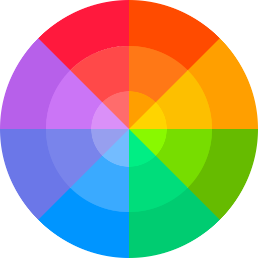

Color Theory
Meaning of color theory is the set of rules that every designer uses as guidelines which helps them to communicate with users or consumers. That means that diffrend colors evokes diffrend emotions in people. Let´s take color Blue as a exemple this color represtents both sky and the sea and gives us this sense of open spaces, freedom and sensitivity, but also gives us this feeling of trust, faith, wisdom and stability, so diffrend companies and designer use this technique to mabey gain certain group of customer´s trust, and that´s how color theory works.
Typography
The definition of tyopgraphy is the art and technique of making written language readable and appealing when displayed. Like colors typography can evoke diffrend emotions in people very good exemple is I Will Find You and I Will Find You. See the diffrence? In typography are also very important point sizes, line lengths, line-spacings and letter-spacing that has a very big but suttle impact on how we see and read letters.
Iconography
From what I understand about iconography is that it started for example on christian religious paintings when the image on the painting represtents something like the dove that represtents the holy spirit. But we can also see how that transisioned to the modern world where we use icons to express emotions and we see how much inpact it has on our culture today because if you imagined the text masseges without using emojis it feels wierd. So in short terms iconography lets us express our self or simbolize something.

Interactivity Design
Interactivity design or often called IxD is all about user Interactivity with the product, it is when a technology products are designed to center on human behavior, interaction and utilization of a product. IxD enables the building of a technology product by focusing on its visiual interface and interaction, rather than the "hardcoding" aspect of a softwere.

Animation
Animation Design it is an art an art of creating special effects and other designes for various forms of media like movies, video games and even social media posts and not only that. Why do we use it on websites though? well since website design drastically improved through diffrend tools, animation have been apart of this. Nowadays they are used to create eye-catching website to create better conversions and attract users to buy, click, and view things on our websites. Animation is also helpful to distract the user while the content loads, making it seem to be quicker while also allowing them to see movement or progress up front.